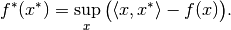

Glossary¶
- array-like¶
Any data structure which can be converted into a
numpy.ndarrayby thenumpy.arrayconstructor. Includes allTensorbased classes.- convex conjugate¶
The convex conjugate (also called Fenchel conjugate) is an important tool in convex optimization. For a functional
 , the convex conjugate
, the convex conjugate  is the functional
is the functional
- discretization¶
Mathematical structure to handle mapping between abstract objects (e.g. functions) and concrete, finite realizations, e.g.,
Tensor’s. The mapping from abstract to concrete is here called sampling, and the opposite mapping interpolation.- domain¶
Set of admissible inputs to a mapping, e.g., a function or an operator.
- dtype¶
Short for data type, indicating the way data is represented internally. For instance,
float32means 32-bit floating point numbers. Seenumpy.dtypefor more details.- element¶
Saying that
xis an element of a givenSetmy_setmeans thatx in my_setevaluates toTrue. The term is typically used as “element of <set>” or “<set> element”. When referring to aLinearSpacelike, e.g.,DiscretizedSpace, an element is of the corresponding typeLinearSpaceElement, i.e.DiscretizedSpaceElementin the above example. Elements of a set can be created by theSet.elementmethod.- element-like¶
Any data structure which can be converted into an element of a
Setby theSet.elementmethod. For instance, anrn(3) element-likeis any array-like object with 3 real entries.- in-place evaluation¶
Operator evaluation method which uses an existing data container to store the result. Often, this mode of evaluation is more efficient than out-of-place evaluation since memory allocation can be skipped.
- interpolation¶
Operation in the context of a discretization that turns a finite data container into a function based on the values in the container. For instance, linear interpolation creates a function that linearly interpolates between the values in the container based on grid nodes.
- meshgrid¶
Tuple of arrays defining a tensor grid by all possible combinations of entries, one from each array. In 2 dimensions, for example, the arrays
[[1], [2]]and[[-1, 0, 1]]define the grid points(1, -1), (1, 0), (1, 1), (2, -1), (2, 0), (2, 1). Note that the resulting grid has the broadcast shape, here(2, 3), broadcast from(2, 1)and(1, 3)(expressed in code:result_shape = np.broadcast(shape1, shape2).shape).- operator¶
Mathematical notion for a mapping between vector spaces. This includes the important special case of an operator taking a (discretized) function as an input and returning another function. See the in-depth guide on operators for details on their usage and implementation.
- order¶
Ordering of the axes in a multi-dimensional array with linear (one-dimensional) storage. For C ordering (
'C'), the last axis has smallest stride (varies fastest), and the first axis has largest stride (varies slowest). Fortran ordering ('F') is the exact opposite.- out-of-place evaluation¶
Operator evaluation method that creates a new data container to store the result. Often, this mode of evaluation is less efficient than in-place evaluation since new memory must be allocated.
- proximal¶
Given a proper and convex functional
 , the proximal operator is defined by
, the proximal operator is defined by- proximal factory¶
A proximal factory associated with a functional
is a function that takes a scalar  and returns the proximal of the scaled functional .
This indirection is needed since optimization methods typically use scaled proximals for varying , and that the scaled proximal cannot be inferred from the unscaled one alone.
and returns the proximal of the scaled functional .
This indirection is needed since optimization methods typically use scaled proximals for varying , and that the scaled proximal cannot be inferred from the unscaled one alone.- range¶
Set in which a mapping, e.g., a function or operator, takes values.
- sampling¶
Operation in the context of discretization that turns a function into a finite data container. The primary example is the evaluation (“collocation”) of the function on a set of points.
- vectorization¶
Ability of a function to be evaluated on a grid in a single call rather than looping over the grid points. Vectorized evaluation gives a huge performance boost compared to Python loops (at least if there is no JIT) since loops are implemented in optimized C code.
The vectorization concept in ODL differs slightly from the one in NumPy in that arguments have to be passed as a single tuple rather than a number of (positional) arguments. See the ODL vectorization guide and the NumPy vectorization documentation for more details.